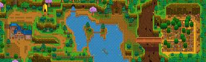

Slime Incubator
| Slime Incubator | |
| Hatches slimes eggs into slimes. Allows you to raise slimes outdoors. | |
| Information | |
| Source | Crafting |
| Sell Price | Cannot be sold |
| Crafting | |
| Recipe Source | |
| Ingredients | |
The Slime Incubator is a machine that hatches Slime Eggs into actual Slimes. One incubator comes with the Slime Hutch and will produce slimes that live indoors. You can raise slimes outdoors by crafting a slime incubator yourself. Eggs take  4,000m (2d 13h 20m) to incubate.[1] The Coopmaster Profession cuts this time in half.
4,000m (2d 13h 20m) to incubate.[1] The Coopmaster Profession cuts this time in half.
Note that Fairy Dust does not work on Slime Incubators.
Incubators outside the farm
It is possible to place chests and other crafted items outside the farm. Chests are useful for storing gifts close to the homes of Villagers who prefer them or to allow additional storage when Mining, Fishing, or Foraging. Worm Bins can be placed near fishing spots, Furnaces can be placed at the entrance to the Mines, and entire sections of the Valley may be utilized for Keg or Preserves Jar processing. Common Trees can be planted in tillable soil and tapped.
If a villager walks through the square where a crafted item was placed, the item will be destroyed. Below are player-created maps to indicate which tiles on the map are safe from villager-pathing. The tiles with the Rotten Plant should be safe.
Safe-pathing images of the interiors of homes and buildings can be found in the complete image gallery located at https://imgur.com/a/JlRXGlc
Note that items placed on the docks at the beach may be destroyed by villagers during the Dance of the Moonlight Jellies, Night Market, or by Emily if married to her. The image below is accurate for players who do not attend the festivals and don't marry Emily.
Note: These images are accurate as of v1.4; they do not include any of Leo's paths outside of The Mountain.
For updated images, please see this reddit post or this imgur album.
-
 Pelican Town as of v1.4
Pelican Town as of v1.4 - The Mountain as of v1.5


References
- ↑ See Object::performObjectDropInAction in the game code.